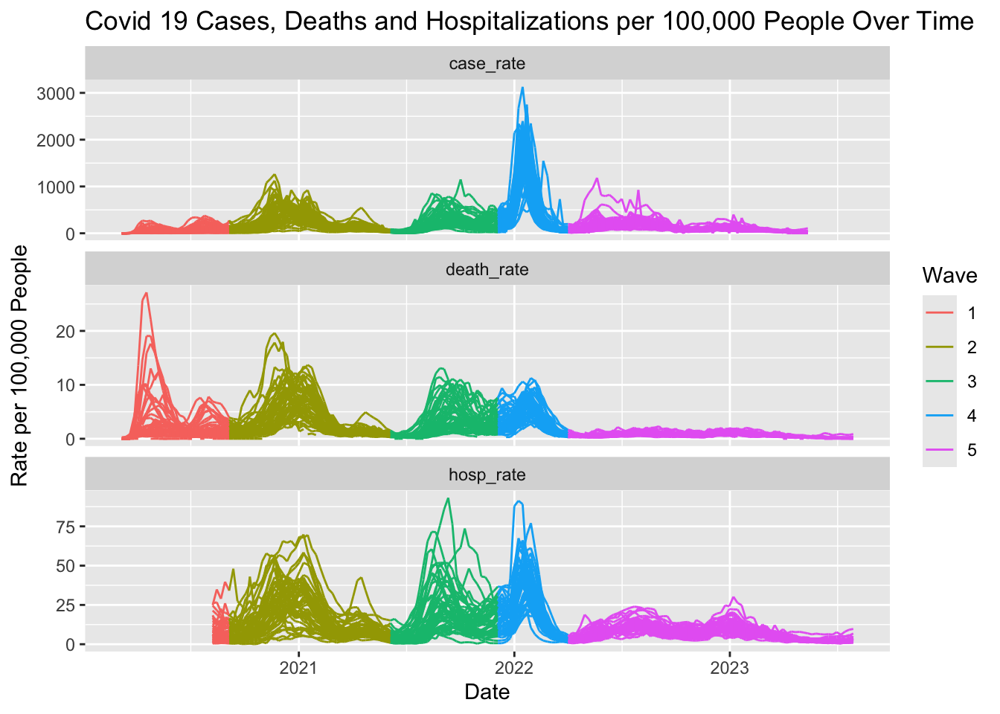
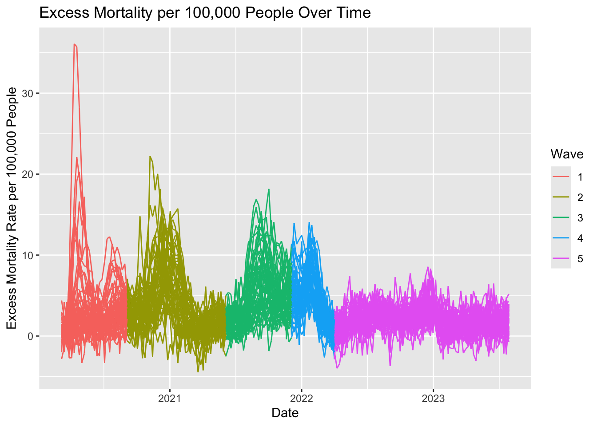
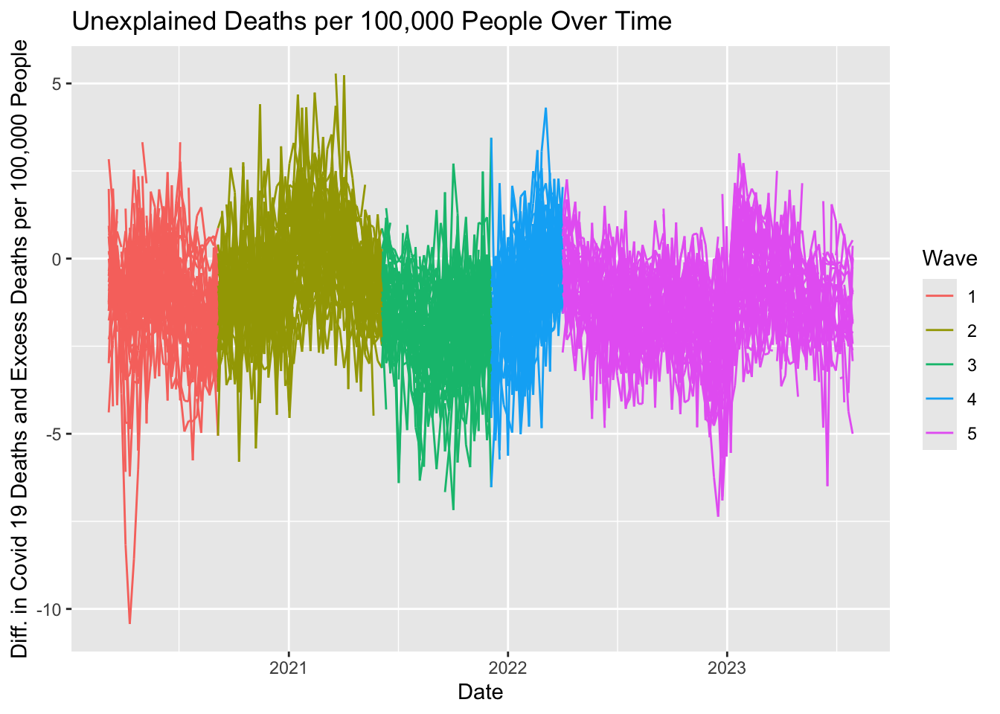
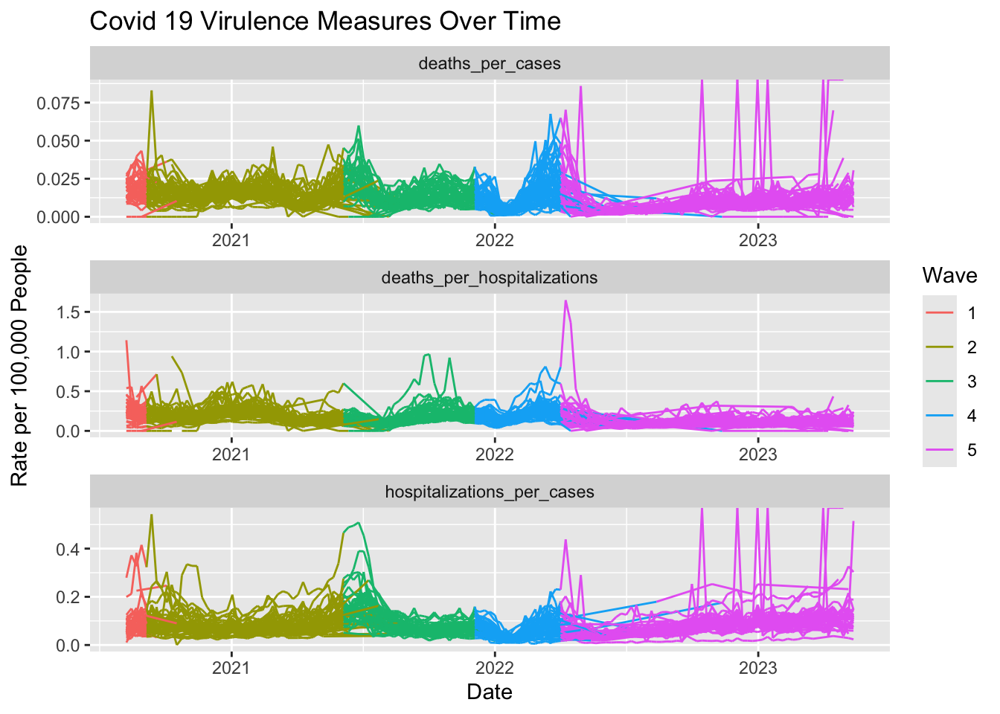

BST 260 Final Project
BST 260: Final Project
Julia Capperella, Grace Gaultier, Kathryn Saxton
Abstract
This analysis aims to assess the effectiveness of each state in the United States’ response to the COVID-19 pandemic. Further, the study hoped to conclude whether the excess deaths in each state could be attributed to the pandemic. Through the assessment of COVID-19 death rates and case rates in each state over 5 different time periods of peak cases, this study found that certain states performed better in preventing COVID-19 related deaths and cases, such as Hawaii and Washington. Further, it was concluded that because the excess mortality rates followed similar trends as the COVID-19 death rates, the excess mortality can be mostly attributed to the pandemic. Additionally, similar states had the lowest and highest excess mortality rates as COVID-19 death rates. Virulence rates changed overtime as new vaccines and variants emerged. Results reveal important health differences that arise from different treatments and preventions. Further research should look into what policies these states had in place to allow them to perform better or worse in terms of death and case rates.
Introduction
The COVID-19 pandemic stopped the world, and challenged the public health crisis process in the United States. COVID-19 is a disease that is caused by the SARS-CoV-2 virus that is highly contagious and killed more than 1.2 million people in the United States alone.[1] It is a respiratory illness that causes cold and flu-like symptoms, though it affects the whole body.[1] Some risk factors for COVID-19 are older age, being immunocompromised, certain disabilities, and other pre-existing health conditions. Clearly, COVID-19 is a serious threat to modern society, and properly understanding the disease and its spread is critical for controlling its risk.
The timeline of the pandemic is important when attempting to analyze the pandemic and corresponding data. The first case of COVID-19 was reported in the US in January 2020.[2] The country began to shut down in March 2020, right around when the first vaccines were entering trials.[2] The FDA then approved the first COVID-19 vaccine on December 11, 2020.[3] The first booster was released in September 2021, and several new boosters have been released since.[4]
Since the first case of COVID-19, new variants have emerged which may not be as preventable as the previous variant, so tracking new variants is important to improve testing, treatment and vaccination.[5] The CDC has highlighted previous waves of COVID-19 cases caused by different variants: Delta caused a Summer 2021 wave, Omicron BA.1.1.529 caused a Winter 2021 wave, Omicron BA.5 caused a Summer 2022 wave, and Omicron BA.2.86 caused a Winter 2023 wave.[6]
Along with variants presenting new challenges and requiring new treatment/prevention plans, COVID-19 severity can change with the season.[6] Though COVID-19 does not have a specific “season” as the flu does, it has shown seasonal peaks during the winter and during the summer.[6] It is important to note that most peaks occurred during the Summer or the Winter, which may be caused by society’s different habits during these seasons.[6]
The response to the COVID-19 pandemic in the United States has been well debated. In unprecedented times, it was difficult to know the correct ways to respond. Some arguments about the response in the year after the initial case in the US are that the lockdown happened too late, testing was not readily available, there were not enough resources (material and human) within healthcare, the government was not equipped to handle the pandemic, etc.[7] It is important to understand what went wrong and right within the COVID-19 pandemic response in the chance that the world is faced with another pandemic.
The goal of this project, therefore, is to understand how different states responded to the pandemic and what can be learned from these specific states. In general, rates will be the most interesting type of metric to study and compare responses on the state level, as these will properly account for variation in population sizes between states. COVID-19 case rates, death rates, and hospitalization rates can show how quickly the virus is spreading, as well as its severity. In order to study virulence and the evolution of the virus and its variants over time, we can compute death per case rates, showing how many infected people eventually succumb to the virus; hospitalizations per case rates, showing how many infected people require more intensive care; and death per hospitalization rates, showing the rate at which specialized care is able to treat the virus. Taken all together, these measurements will show how effective a particular state’s response was.
Methods
In order to adequately study the Covid-19 pandemic in the United States, multiple data sets are required. This report aims to analyze Covid-19 responses on a state-by-state basis, so it is necessary to compute rates for more accurate comparisons, due to variation in state population sizes. Population data was sourced from the US Census Population Estimates from 2021, containing data for 2020 and 2021. Information about the regions and states defined by the CDC obtained from a JSON in Github. State level data on COVID-19 cases, deaths and hospitalizations were obtained from the CDC. These datasets contained data collected from 2020 to 2023.
After pulling the population data from the API census, the data were wrangled to make it tidy using the tidyverse package in R. This included renaming columns, adding state abbreviations, and parsing numeric values. Since the population data was only reported until 2021, the growth rate of the population was calculated by subtracting the population from 2020 from 2021 and dividing by the population in 2020 and imputing the data based on the growth rate times the population from the previous year (SI Equation 1). This constant growth assumption may influence the results, if incorrect.
Within the COVID-19 datasets (cases, hospitalizations, deaths), two new variables were created, MMWR week and MMWR year using the lubridate package in R. The counts of cases, hospitalization and deaths were summed on a weekly basis. All of the data frames were combined into one large dataframe. Rates per 100,000 people were calculated using the population data following SI Equation 2. Lastly, a variable called excess mortality was created by calculating expected deaths using the percent of expected deaths variable and subtracting the expected deaths from the total deaths (SI Equation 3).[8] The complete wrangling process is detailed in the wrangling.qmd file.
The next step in the analysis was data visualization. All data were visualized using ggplot in R. The data frame was mutated to calculate the case rate, hospitalization rate and death rate per 100,000 people by dividing each variable by population and multiplying by 100,000. Visualization of these rates helped inform the decision about delineating periods in the pandemic, as well as providing insight into state performance. Excess mortality was studied in a similar fashion, and the differences between excess mortality and COVID-19 deaths helped determine whether COVID-19 was responsible for the uptick in mortality or not. More visualization was then conducted to answer the question of whether COVID-19 became more or less virulent across the different periods. To study the virulence, or the severity and harmfulness of a disease, the case rates, hospitalization rates, and death rates (calculated in the same way as mentioned above), were used to compute death per case rates, hospitalization per case rates, and death per hospitalization rates. Each of these rates were calculated by dividing the first rate by the second rate, respectively, after NA values had been removed. Once these rates were calculated, a plot of the change over time for each virulence measure was created to see the overall change in virulence. To be thorough with the investigation, the virulence rate changes over time were also visualized for each wave individually in the supplemental methods, which was done by filtering the overall dataframe for each respective wave. Furthermore, in the supplemental methods a plot was made for each virulence measure for each wave to compare the measure in each state within each wave.
Results
The first step for analyzing the pandemic is to divide the entire pandemic into waves, corresponding to seasonal surges. Figure 1 shows weekly case, death and hospitalization rates over time. Each state is represented by a single line on the plot, and waves are designated by different colors. Waves were selected based on peaks in cases, deaths, and hospitalizations, which were roughly aligned temporally. There are five major peaks (or clusters of smaller peaks) shown in Figure 1 (and SI Figure 1) designated as waves. Wave 1 extends from March 1, 2020 to August 31, 2020, Wave 2 from September 1, 2020 to May 31, 2021, Wave 3 from June 1, 2021 to November 30, 2021, Wave 4 from December 1, 2021 to March 31, 2022 and Wave 5 from April 1, 2022 to July 31, 2023.
Figure 1: COVID-19 Pandemic Divided into 5 Waves.
The COVID-19 rates over time varied by state. Table 1 shows the 5 top performing states, with the lowest average weekly death rate per 100,000 people, and 5 worst performing states, with the highest average weekly death rates per 100,000 people, by wave. Supplementary Figures 2-6 offer a visual representation of the death rates across all states for the five waves, and SI Table 1 provides a summary of the best and worst performers.
Top 5 Performers
| Wave 1 | Wave 2 | Wave 3 | Wave 4 | Wave 5 | |
|---|---|---|---|---|---|
| #1 | Alaska (0.00) | Vermont (0.70) | New York (0.70) | Hawaii (1.90) | Alaska (0.00) |
| #2 | Wyoming (0.00) | Washington (1.24) | Massachusetts (0.78) | New York (2.04) | Wyoming (0.27) |
| #3 | Hawaii (0.31) | Oregon (1.33) | New Jersey (0.88) | Utah (2.07) | Texas (0.43) |
| #4 | Vermont (0.33) | Hawaii (1.35) | Connecticut (0.93) | Washington (2.08) | New York (0.46)) |
| #5 | Oregon (0.50) | Puerto Rico (1.58) | Vermont (0.95) | Puerto Rico (2.16) | Utah (0.47) |
Bottom 5 Performers
| Wave 1 | Wave 2 | Wave 3 | Wave 4 | Wave 5 | |
|---|---|---|---|---|---|
| #1 | New Jersey (6.20) | North Dakota (6.87) | Wyoming (5.78) | West Virginia (6.10) | West Virginia (1.35) |
| #2 | Connecticut (5.66) | South Dakota (6.81) | Montana (5.12) | Ohio (6.00) | Vermont (1.27) |
| #3 | Washington D.C. (5.33) | Wyoming (4.93) | West Virginia (5.06) | New Mexico (5.69) | Delaware (1.20) |
| #4 | Rhode Island (4.86) | Oklahoma (4.91) | Alaska (4.65) | Kentucky (5.52) | Kentucky (1.17) |
| #5 | Massachusetts (4.78) | Rhode Island (4.53) | Florida (4.44) | Oklahoma (5.41) | Maine (1.05) |
Table 1: Weekly Death Rates by Wave. Average weekly COVID-19 death rates per 100,000 people are given in parentheses.
Next, excess mortality for each week for each state was calculated (SI Equation 3). The results are shown in Figure 2, with each individual line representing a state.

Figure 2: Excess Deaths per 100,000 people over time.
There was a peak in excess mortality during Wave 1 with the rate around 35 per 100,000. The next highest peak was in Wave 2 with a rate of about 20 per 100,000 people, and Wave 3 at a rate of under 20 per 100,000 people. There appears to be no peaks in the Wave 5.
These surges in excess mortality align with pandemic peaks. When deaths attributed to COVID-19 are subtracted from the excess mortality counts, the remaining unexplained deaths are close to 0, as seen in Figure 3, which displays differences centered about 0. Supplementary Figures 7-11 shows a breakdown of the differences by wave.

Figure 3: Unexplained Deaths per 100,000 People Over Time.
The excess mortality rates by state were computed and the results for each wave are visually represented in Supplementary Figures 12-16. Table 2 shows a tabular form of the data, representing the states with the top 5 highest and lowest excess mortality for each wave.
Highest 5 Average Excess Mortality Rates
| Wave 1 | Wave 2 | Wave 3 | Wave 4 | Wave 5 | |
|---|---|---|---|---|---|
| #1 | New Jersey (7.63) | South Dakota (6.96) | West Virginia (8.48) | New Mexico (8.05) | Maine (3.28) |
| #2 | Washington D.C. (6.63) | North Dakota (6.57) | Wyoming (8.35) | West Virginia (8.00) | Delaware (3.20) |
| #3 | Louisiana (6.09) | New Mexico (5.65) | Arkansas (7.96) | Arizona (7.28) | West Virginia (3.15) |
| #4 | Mississippi (5.82) | Wyoming (5.61) | Montana (7.72) | Tennessee (6.29) | Puerto Rico (3.11) |
| #5 | Connecticut (5.81) | Mississippi (5.58) | Florida (6.76) | Kentucky (6.22) | Vermont (3.03) |
Lowest 5 Average Excess Mortality Rates
| Wave 1 | Wave 2 | Wave 3 | Wave 4 | Wave 5 | |
|---|---|---|---|---|---|
| #1 | Hawaii (0.04) | Massachusetts (1.00) | Massachusetts (1.06) | New York (1.94) | New Jersey (0.45) |
| #2 | Arkansas (0.26) | Hawaii (1.17) | New York (1.24) | Massachusetts (2.20) | Pennsylvania (0.69) |
| #3 | Maine (0.45) | Vermont (1.21) | New Jersey (1.26) | Hawaii (2.90) | Maine (0.70) |
| #4 | Wyoming (0.63) | New York (1.54) | Maryland (1.80) | California (3.03) | New York (0.72) |
| #5 | Massachusetts (4.78) | Washington (1.62) | Connecticut (1.87) | New Jersey (3.04) | Washington D.C. (0.81) |
Table 2: Average Weekly Excess Mortality Rates by Wave. Average weekly excess mortality rates per 100,000 people are given in parentheses.
Virulence analysis over time reveals a similar trend for all three measures of virulence – deaths per cases, hospitalizations for cases, and deaths per hospitalizations. The results of the visualization can be seen in Figure 4.

Figure 4: COVID-19 Virulence Rates per 100,000 People Over Time.
Virulence was high at the beginning of the pandemic. It seemed to decrease at the beginning of Wave 2 and increase towards the middle of Wave 2. Interestingly, hospitalizations per cases and deaths per cases increased during the transition between Wave 2 and 3, but deaths per hospitalizations decreased during this time. There was a clear decrease in all three virulence rates at the beginning of 2022, and a severe upward trend of all three rates at the end of Wave 4 and beginning of Wave 5. Deaths per hospitalizations were steady for the rest of 2022 and beyond, but hospitalizations and deaths per cases were inconsistent starting in late 2022 and continuing into 2023.
Discussion
The coronavirus responsible for COVID-19 morphed over time, changing in infectiousness, severity, and range of symptoms. This evolution, coupled with seasonal changes, caused the pandemic to undergo surges over time. Recognizing that each of these surges are underscored by differing variants of coronavirus and characterizing them separately is key to properly understanding trends in the pandemic seen through this analysis.
As seen in our results, within Wave 1, Alaska had the lowest average weekly death rate and New Jersey had the highest. Vermont performed the best in Wave 2 and North Dakota the worst. For Wave 3, New York was the best and Wyoming was the worst. Wave 4 had Hawaii at the top and West Virginia at the bottom. Finally, Alaska returned to the top and West Virginia stayed at the bottom. While there are no obvious trends among regions in states doing the best or the worst, going forward research should compare the COVID-19 response between these states. Understanding what the responses consisted of in states such as Alaska, Vermont, New York and Hawaii can help guide future responses.
Furthermore, the death rates were not consistent across waves. Wave 5 had the lowest average death rates by far, and earlier waves experienced more death. This is evidence of several factors: new variants emerging, improved treatment approaches, and increased resources, among others. Investigating the changes in response throughout each wave is essential for public health work going forward.
As seen in Figure 3, the excess mortality rates were not consistent across waves. They tended to decrease across each wave from Wave 1 to Wave 5. These trends mirror the change in covid death rates in Figure 1. Based on these figures, it can be assumed that the excess mortality can be attributed to the COVID-19 pandemic. Further, comparing Table 1 to Table 2, there was an overlap of states with highest excess mortality rate and highest COVID-19 death rate during wave 1. These states were New Jersey, Connecticut and DC. During this wave, the excess mortality rates could be attributed to COVID-19 deaths. New Jersey jumped from the top 5 highest excess mortality rate in wave 1 to the bottom 5 in wave 3, 4 and 5. Similarly, this eventually occurred for Washington DC and Connecticut. This could be due to the states with the most deaths in the first wave locking down to prevent COVID-19 cases earlier than other states, therefore leading to better prevention. Research should be conducted to confirm this change is attributed to the effectiveness of quarantine measures.
The results show extreme changes in virulence over time. The initial steadiness and downtrend of virulence in 2021 is likely due to the release of the vaccine, which helped curb symptoms but was not widely available until later in 2021, which is seen in Figure 4’s trend. As noted in the results, hospitalizations and deaths per cases then increased noticeably, while deaths per hospitalizations decreased, which is extremely important to note. During this time, the vaccine had become widely available, so vaccinated people had a lower chance of being a case, death, or hospital patient. Therefore, the cases seen are likely individuals who refused the vaccination, which would lead to a higher likelihood of them becoming gravely ill. The virulence would be very high for a non-vaccinated individual. The decrease in deaths per hospitalizations reveals that although the contagiousness of the disease was likely increasing, the care provided in the hospitals decreased death probability once an individual was hospitalized. The data reveals the power of the vaccine – if it was being used in hospitals for those who were initially unvaccinated, it likely saved them from dying as those who did not get vaccinated and caught the disease did.
After this uptick, virulence was fairly steady. There was a decrease at the beginning of 2022, likely due to all new strains being under control for a short time. However, virulence quickly rose in early Spring of 2022 until Summer 2022. The increase in virulence during this period is likely due to the new variants – Omicron and Delta. Higher cases are seen here because as a whole there was no method to combat the new strains yet. Vaccines were less effective, the strains were more contagious, and hospitalizations and deaths were likely once individuals became cases. It would be important to investigate public health measures during this time because, as seen in Figure 4, the different strains were quickly gotten under control. The steady decrease into Wave 5 demonstrates that the US had finally figured out how to quickly combat this deadly disease.
Virulence inconsistencies in 2023 reveal human patterns – people still refusing to get the vaccine may be more susceptible to COVID-19, which would likely lead to them being hospitalized or dying. Big events were held consistently, so there were more opportunities to have a breakout. However, the consistency of deaths per hospitalizations is very important. It demonstrates that human behavior affects the virulence of the disease, but the disease itself remains predictable and steady. Virulence may seem higher at a certain point if individuals aren’t getting vaccinated or boosted, but realistically at this time the US healthcare system clearly knew how to save an individual if they were hospitalized for COVID-19, which means it was not truly becoming more harmful.
While the analysis detailed in this report provides valuable insight into COVID-19 responses, it is not without limitations. Due to data availability, population data was extrapolated for later years, and the validity of this hinges on the underlying constant growth assumption. Further, the CDC stopped reporting COVID-19 data in 2023, and so trends that occurred later in the pandemic may not be captured. Lastly, this report relies on accuracy of case and death measurements, but accuracy might have varied between states, confounding results. For example, some states did not regard COVID-19 as such a threat, and did not test as thoroughly, meaning more cases could have gone undetected.
In the future, using a more complete data set would be helpful. It would also be interesting to investigate other factors that may be contributing to excess mortality, in addition to COVID-19. Additionally, now that we are aware of which states kept their death rates low, learning more about what their specific response consisted of would be useful.
In conclusion, we have sectioned the pandemic into periods and studied trends over time. Alaska, Vermont, New York and Hawaii were among states who controlled death rates well, and their responses should be referenced in future pandemics. Excess mortality during the pandemic period can be attributed to COVID-19 in most cases, although more research may be warranted into other factors as well. Further, virulence changes seemed most likely a result of vaccine and variant changes over time. Overall, an investigation into treatment and prevention techniques during the different waves highlighted in this analysis would strongly inform public health policies and decisions.
References
[1] https://www.cdc.gov/covid/about/index.html
[2] https://www.cdc.gov/museum/timeline/covid19.html